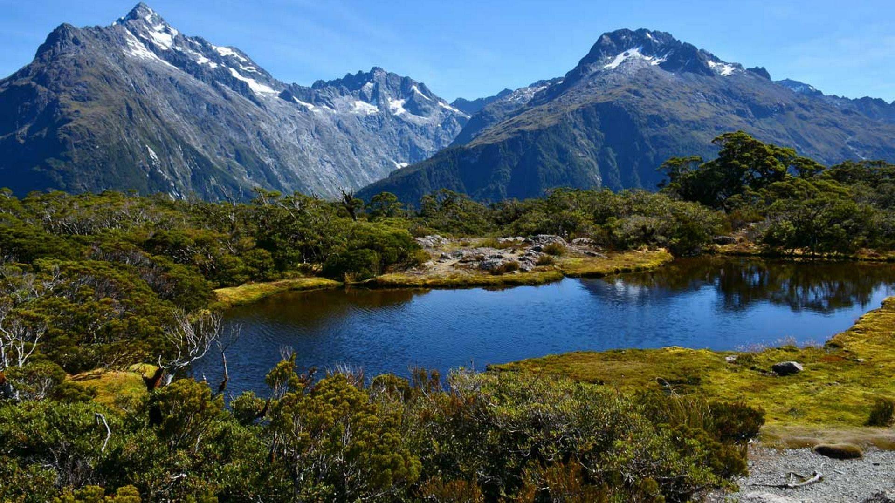

Routeburn Track and Huts
One of Aotearoa's Great Walks
The Routeburn Track stands as one of New Zealand's premier "Great Walks," renowned globally for its stunning lake views, ancient native forests, and dramatic mountainous landscapes. This iconic multi-day tramp (hike) typically takes 2-4 days to complete and spans 33km one way, connecting the head of Lake Wakatipu in Mount Aspiring National Park with The Divide on the Milford Road in Fiordland National Park.
The best time to walk the track is during the Great Walks season, which runs from November to April. During this period, weather conditions are generally more stable, and Department of Conservation (DOC) huts and facilities are fully operational, offering a safer and more enjoyable experience. Outside of this season, conditions can be extremely challenging due to snow, ice, and rapidly changing weather.
Diverse Landscapes and Highlights
The Routeburn Track offers an incredibly diverse hiking experience, traversing through a range of ecosystems and geological formations:
- Lush Beech Forests: The lower sections wind through dense, ancient beech forests, rich with mosses, ferns, and native birdlife.
- Alpine Meadows: As the track climbs, hikers emerge into spectacular subalpine tussock grasslands and meadows, particularly vibrant in spring and early summer.
- Mountain Passes: The track crosses two impressive mountain passes: Key Summit (offering panoramic views) and Harris Saddle (the highest point on the track at 1,255m), both providing breathtaking vistas of surrounding peaks and valleys.
- Stunning Lakes: Key highlights include the turquoise waters of Lake Mackenzie, Lake Harris, and Lake Howden, often reflecting the dramatic mountain scenery.
- Waterfalls and Rivers: Numerous waterfalls cascade down the rock faces, and the vibrant blue waters of the Route Burn river itself are a constant companion.
Huts and Campsites
Accommodation along the Routeburn Track is provided by the Department of Conservation's well-maintained huts and designated campsites. Bookings are essential and often sell out months in advance, especially for the Great Walks season. The track features:
- 3 Huts: Routeburn Flats Hut, Routeburn Falls Hut, and Lake Mackenzie Hut. The Lake Mackenzie Hut, with a capacity for 50 people, is particularly popular due to its stunning lakeside location.
- 2 Campsites: Routeburn Flats Campsite and Lake Mackenzie Campsite, offering a more rustic experience for those with their own tents.
The Routeburn Track is celebrated not just for its physical challenge, but for its profound connection to New Zealand's pristine wilderness, making it an unforgettable journey for thousands of trampers each year.